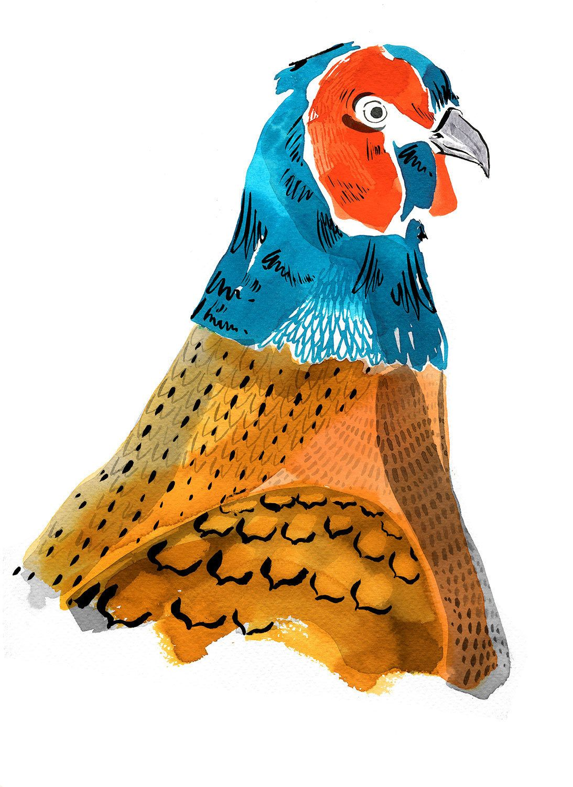

Artisti presenti
La selezione degli artisti per la mostra "Visioni Illustrate" è stata un processo meticoloso e ispirato, volto a
rappresentare la vasta gamma di stili e voci nell'illustrazione contemporanea.
Un comitato di esperti ha valutato
centinaia di candidature provenienti da tutto il mondo, con l'obiettivo di scegliere opere che non solo dimostrassero
eccellenza tecnica, ma anche originalità concettuale e capacità di comunicare temi profondi o storie coinvolgenti.
L'attenzione è stata rivolta alla diversità di tecniche, dalla tradizionale alla digitale,
e alla varietà di espressioni culturali, assicurando che la mostra offrisse uno spettro completo
delle tendenze attuali e delle innovazioni nell'arte dell'illustrazione.
Artisti in Evidenza
Artisti presenti alla mostra

Martina Paukova, Berlin-based illustrator, adds vibrant charm to everyday scenes with quirky characters and bold colors. Her unique style, influenced by Memphis design, has earned her prestigious commissions. Despite a background in politics, Martina pursued illustration at Camberwell College of Arts in London. Today, she infuses humor and personality into editorial and commercial projects, captivating audiences worldwide.

Adrian Johnson, a British graphic artist and illustrator, is known for his distinct and timeless style. His work, characterized by economical yet highly crafted graphics, showcases attention to detail, humor, and sophistication. In addition to commercial success, he has exhibited internationally and lectured at universities worldwide. Currently based in Copenhagen, Denmark.

Michelle Thompson, a UK-based artist and RCA graduate, is renowned for her editorial collage work. With clients including Royal Mail, BBC, Reebok, Penguin Books, and The Guardian, her distinctive style combines hand-layered papers and paints, digitally edited to convey complex subjects with accessibility. Thompson's work is celebrated for its unique approach to editorial illustration.

Sanna Mander, one of Finland's most prolific illustrators, blends cheerful retro style with a contemporary twist. Her versatile work spans products, packaging design, posters, editorial illustrations, and textiles. Winner of Cannes Young Creatives in 2006 and Junior of The Year in 2007 at the Finnish Best of the Year competition, Mander draws inspiration from the lush flora and fauna of her native Finland, creating mixed-media odes to the world's unpredictable joys.

Emily Robertson, a graduate of Glasgow School of Art, infuses joy into her sweet ink and watercolor works. With a keen eye for detail and a signature flair, she captures the essence of her subjects, from pastries to portraits, with remarkable color and texture. Robertson's talent has attracted a wide range of clients, including Anthropologie, Chanel, Faber&Faber, Marks and Spencer, National Trust, Pentagram NY, and Port magazine.

Icinori, the collaborative effort of Mayumi Otero and Raphael Urwiller, is a testament to the creative richness found in their quiet Parisian suburb. Their work, inspired by a decade-long artistic journey since meeting as students in Strasbourg, encompasses drawing, writing, painting, publishing, and more. With a modern folkloric style, their art transcends earthly boundaries, offering glimpses into otherworldly realms. They find joy in problem-solving, research, experimentation, and the pursuit of magical moments in their creations.